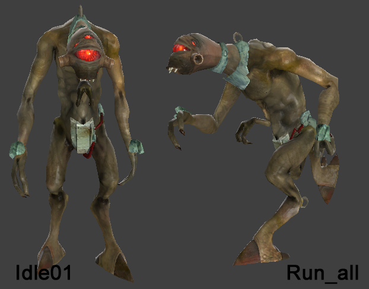

I was considering posting this in the Bug section, but I’m not sure if it’s an actual bug or simply an oversight, so I thought it better to make it a suggestion here. Mods, feel free to move it if you think it goes there instead.
Anyway, something I’ve noticed in Black Mesa is that the vortigaunts stand and run like this (I’ve put the animation names for reference):

The trouble with this is that it clashes with their attack animation, so when they finish attacking their arms suddenly snap to their sides, which looks very unnatural. They also look quite relaxed in that pose, which doesn’t really fit the situation they’re in. I suggest that their standing and running animations be changed to these:

These are the animations used by the vorts during Episode 2 in the big antlion fight. It not only fits in with their attack animation, but it also makes them look more alert and aggressive, and less “cute”.
Also, I remember a discussion a short while back over the non-aggressive vorts in Xen, and how you’d differentiate between those that attack you and those that don’t. Well, this posture would be a good visual indicator - if they’re using the second poses they’re aggressive, and if they’re using the first they’re not.
Somewhat nitpicky, I know, and I’m not sure how easy this would be to accomplish, but if it can be added in a patch it’d make the vortigaunts look somewhat more effective as enemies.
tl;dr Replace the first set of poses with the second for regular vorts, use the first poses for ones in Xen that don’t attack you.